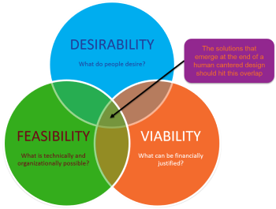

Preparing for Success
At its core digital transformation is about change management, having a clear idea of what you are trying to achieve, understanding how to implement it and making sure the benefits are realised in both the short and longer term.
Our expertise in delivering "Discovery-based" digital transformation, avoids the cost, quality and adoption issues that blight many traditional transformation programmes.
This iterative approach, constantly testing assumptions, refining the solutions and involving the team from the outset ensures affordable solutions begin delivering value fast!
The Leavitt diamond model provides a good framework to consider the interdependencies between the technology, people and processes associated with a digital transformation programme and are discussed in more detail in the following blocks
Where the developed solution is targeted at enhancing the services provided to your customers, we also provide a discussion of some of the marketing considerations that may need to be managed.
- Technology – Both standard business applications and bespoke software and models used to enhance the company capabilities.
- Task - The desired outcomes of the digital transformation and the iterative capabilities that will be developed to get there.
- People – The employees in the company and the expertise, knowledge and skills they possess.
- Structure – The activities performed by employees the departments and hierarchies in the organisation and how they interact with each other. As the solutions to be developed will be bespoke to each organisation we don't provide a more detailed description of this topic here.
Technology
An overview of how EMPEDATA support digital transformation programmes through developing dedicated applications and analytical solutions to is provided the relevant pages of this site. However, before tearing off to chase new and exciting solutions it's key to understand the capabilities being provided by your existing IT solutions.
Typically, customer relationship management (CRM) and enterprise resource planning (ERP) tools form the backbone a company's data warehouse solution. The first step should always be to see if these systems can, or could be developed to, provide the required capabilities. If you are interested in implementing a CRM and / or ERP capability, both Salesforce and Microsoft, provide very capable, but expensive solutions. As an alternative more affordable open-source solution we recommend considering Dolibar.
Task

A high-level objective for your discovery-based digital transformation journey is essential to provide context to the project. A well-defined design challenge, using the template shown, ensures the team understand what they are aiming for and enable them to judge their success.
Having set the design challenge the key is to break down the behaviours that traditionally act as barriers to innovation:
- Conventionality– Using conventional techniques to solve problems results in conventional solutions. To be truly innovative we need to find new ways of working. Design thinking provides an approach to engage diverse voices to develop a rich understanding of the problem.
- Risk Adversity – In a risk adverse culture the tendency is to kill off the novel and innovative ideas in favour of safer and better understood solutions. Design thinking promotes a culture of experimentation and failing fast to ensure novel solutions get properly explored.
- Ownership- An innovation won’t succeed unless the company employees get behind it. Design thinking provides a methodology to involve people in the process of generating ideas, winning support and ensuring ownership of the developed solutions.
This process, detailed in the excellent book Value Proposition Design breaks this process into 5 phases. As experienced Design Thinking facilitators the EMPEDATA team lead a diverse group of your team, and potentially wider stakeholder community, through a series of fun and engaging workshops, to elicit a user centric requirement, develop solutions and importantly ensure commitment to change from across the organisation.
- Empathize - Immersion in the customer experience produces data, which is transformed into insights,
- Ideate – Potential solutions are then being developed
- Define- The insights are then consolidated and refined to define the critical success criteria.
- Prototype – Examines these proposed solutions through the development of low fidelity models.
- Test - Using the models' teams can test the assumptions and better understand how users would interact with the solution.

People
Any process is only as good as the people who operate it. As your business becomes more digital the demands on your employees may change necessitating training to enable them to adapt and excel in a new working environment.
In addition new key roles will be required to deliver and sustain a digital transformation. While the long-term objective should be to develop these capabilities internally, you're probably going to need a hand to get started. With experienced practitioners across the 7 key digital transformation disciplines EMPEDATA offer a unique capability to both augment and coach your existing team to satisfy these roles.
- Transformation Leader / Product Owner - Understand how the various initiatives contribute to the strategic goals of the programme, provide clear prioritisation of tasks and ensures the different functions contribute, and adapt to, the new ways of working.
- Data Steward - Ensure there is a clear policy regarding where data is held and how its accuracy is maintained. Security and accessibility requirements also need to be controlled managing user permissions and ensuring compliance with the necessary legislation e.g. GDPR
- Design thinking workshop facilitation / System Analyst - Utilising design workshops and user research techniques to define requirements and potential solutions. The output from this role is a well-defined and validated solution of sufficient fidelity to allow the development to commence.
- Application Developers - This category covers a wide range of skills from managing databases, manipulating the data, building ingestion pipelines and API's to ensure the availability of data where it is required and the creation of applications to provide interfaces with which the users interact as detailed in the Productionise page of this site.
- Data Scientists / Analyst - Performing complex processing of data and development of mathematical and machine learning models as defined on the Analyse page of this site
- Scrum Master / Agile Project Manager - Responsible for ensuring the team follows agile processes and practices, establishing an environment where the team can be effective, clearing obstacles and protecting the team from outside interruptions and distractions. For a more comprehensive understanding of this role and the value it provides we recommend reading Scrum The Art of Doing Twice The Work In Half the Time
- Process / Application Owner - Either the principal user or able to represent the users' interests, consolidating feedback, informing design decisions and evaluating the suitability of the developed solutions.
Business Model
A business model allows an organisation to evaluate its health in the market to assess its strengths, weaknesses, opportunities and threats relative to existing and future competitors. When evaluating what a future "digitally enabled" buisness model could look like it can be helpful to consider how a start-up would disrupt the existing business model through either:
- Using digital technology to deliver the services you currently offer
- Fundamentally change the cost structure of the business free from the constraints of a legacy business.
With this in mind business model innovation is then about leveraging the technology to transform how value is delivered to customers, how this value will be promoted, delivered, and monetised and the resources and costs associated with providing that service.
Throughout this process it is essential to constantly evaluate that the proposed services satisfy the 3 key tenants of innovation Desirability, Viability and Feasibility, explored in more detail in the book Business Model Generation
Digital Identity
The final, and much overlooked consideration when using Web Apps to drive a digital transformation is ensuring the identity and brand your application presents aligns with the company values. Whether the platform needs to be given an identity within the organisation or the digital transformation programme used as an opportunity to rebrand the company entirely are key decisions that need to be made. In the context of a WebApp there are 3 main considerations:
Selecting a name
The Web Apps you create will need to have an address which can be achieved through any one of following three options:
- A website will normally use the subdomain www but alternative subdomains can be used with an existing domain name to provide a dedicated web address.
A good example of this is
https://maps.google.com - Alternatively, a subdirectory after the main domain can be used as in
https://www.google.com/maps - The final option is to secure a dedicated domain however it can be difficult and expensive to secure a desirable
.comtop level domain (TLD). In recent years the addition of new TLDs such as.digitalor.bizincreases the available options to be more creative and descriptive.
Whatever the solution you are looking for the name you choose needs to be memorable and aligns with the brand you are trying to create.
Creating a logo
When building a Web App the logo is the thing with which people will identify, it will feature prominently in the header of the website, in the tab on the browser and as an icon when creating links on the users' home screen. When looking to extend the application into the customer community the logo may also be required to support wider marketing of the capability. When selecting a logo there are four main principals that should guide your selection.
- Appropriateness - The logo should convey your brand message to the target audience.
- Simplicity - A minimal and simple logo tends to attract people more easily.
- Scalability - The logo design should work whether it is the size of a favicon in the tab bar of your browser or being used on a giant billboard.
- Timelessness - It takes time to gain brand recognition, frequently changing your identity can damage trust so choose a design that will last.
Whatever the solution you are looking for the name you choose needs to be memorable and aligns with the brand you are trying to create.
Design system
Design systems contain style guide information setting colours, typography, and styles used throughout the user interface (UI). The collection of standards, principles and common UI elements ensure you create a consistent feel across all applications. Material Design, developed by Google, establishes a standard for designing and creating websites and apps with the aim of bringing order to design styles and form a useful basis for application development.
Digital Marketing
Once up and running the challenge is then to get people to visit your site and to develop a better understanding how they interact with it so that to inform future developments and optimise the user experience. Topics to be discussed in the sections include:
- Search engine optimisation (SEO) - is the process of optimising websites so that they rank well on search engines through organic (non-paid) searches. When someone performs a search on the internet, the search engine algorithm matches the user’s search query to the relevant information in their index, providing searchers with an accurate answer to their query. The platforms then use hundreds of signals including page loading speeds, meta descriptions and titles, links and keywords to determine the order in which the content will appear for each searcher. By structuring your site well, you can increase the likelihood of it being prioritise in the result.
- Web analytics - Allows you to track website visitors quickly, without a lot of manual work using a tool like Google Analytics:
- How well does the respondent audience in your web visits correspond to your target audience?
- What traffic sources yield the most valuable customers, not just one-time conversions?
- How can you enable colleagues to use and benefit from your website data?